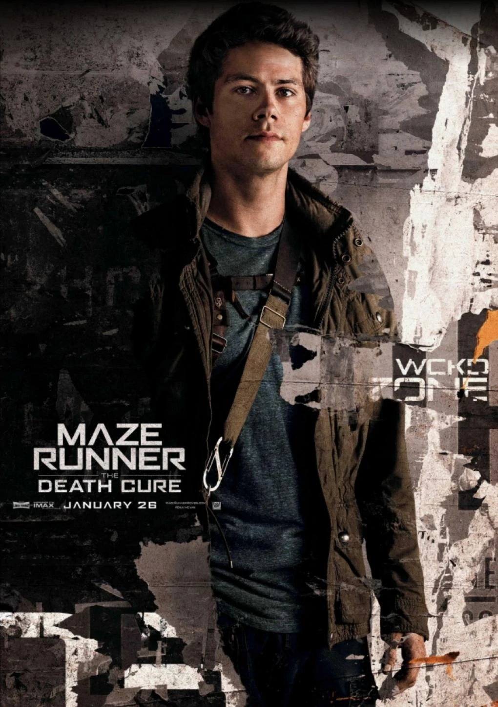
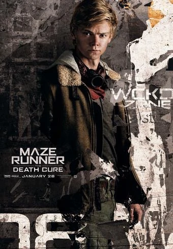
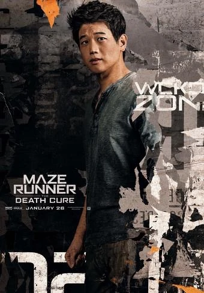
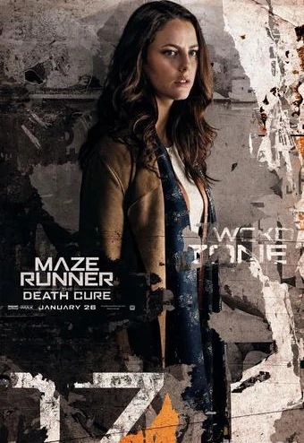
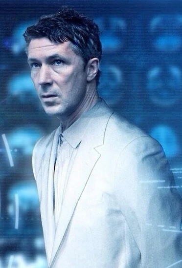

Thomas

Thomas, originally named Stephen, is the last male Glader and one of the creators of the Maze alongside Teresa Agnes. He is the protagonist of the series and presumably named after Thomas Edison.
I just... feel like I need to save everyone. To redeem myself.
— Thomas to Newt.
Newt

Newt is the Second-in-Command of the Gladers. He has long blond hair and a heavy limp from attempting suicide when he was a Runner. He was taller than Alby, despite the one year age difference. Newt was named after Isaac Newton. He is described as having an "odd accent," and Dashner has said he thought of him as being either English or Scottish.
Great, we're all bloody inspired.
Minho

Minho is the Keeper of the Runners, as well as one of the main protagonists of the series.
It's kind of hard to ask a dead guy what he did wrong.
Teresa

Teresa Agnes, originally named Deedee, is the first and only female Glader in Group A and creator of the Maze with Thomas. She is one of the main protagonists of the series and was named after Mother Teresa.
I did what I thought was right.
Janson
Assistant Director Janson (A.D Janson), also referred to as Rat Man (given to him by Minho), was the second highest-ranking official in the organization WICKED under Chancellor Paige. Thomas, who Janson states that "he had never seen someone more dedicated to finding a cure" about, trained Janson after the original Creators were purged. Janson is the main antagonist in both the book series, and in the movie series.